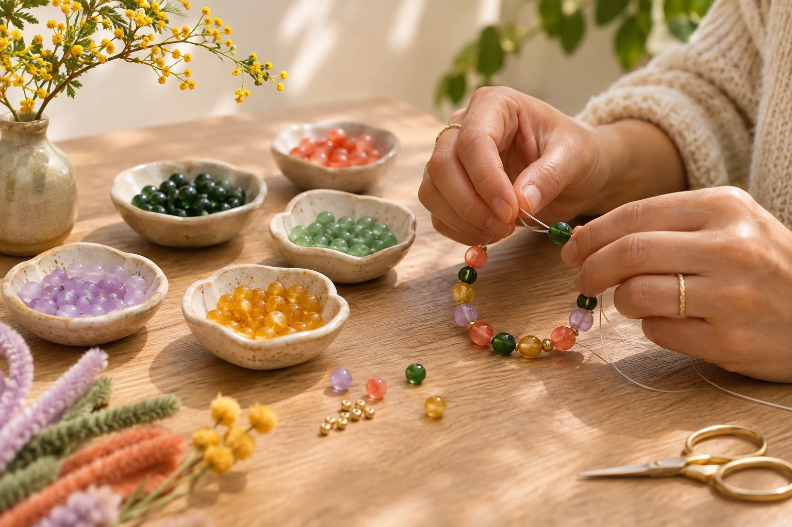

YOUR MOMENT
이런 관심으로
함께합니다.
나의 관심과 궁금한 점을 가볍게 정리해 보세요.
- 좋아하는 색과 비즈의 모양
- 만들어 보고 싶은 작은 작품
- 나의 취향을 표현하는 방법
시간 구성
첫 만남과 관심 나누기, 주제별 상담 또는 활동, 경험을 정리하는 마무리 순서로 진행하는 구성입니다.
각자의 관심과 참여 속도에 맞춰 활동을 나누는 시간입니다.
MORE MOMENTS

YOUR MOMENT
나의 관심과 궁금한 점을 가볍게 정리해 보세요.
첫 만남과 관심 나누기, 주제별 상담 또는 활동, 경험을 정리하는 마무리 순서로 진행하는 구성입니다.
각자의 관심과 참여 속도에 맞춰 활동을 나누는 시간입니다.
MORE MOMENTS